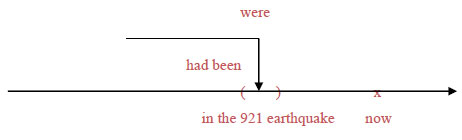
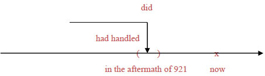
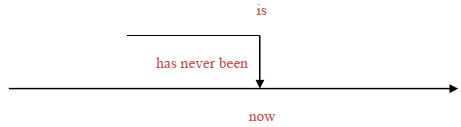

一个句子当中如果有两个以上的限定子句，就会有两个以上的动词。这些动词在时态方面必须符合一致性：并不表示这些动词的时态必须相同，而是这些动词之间必须符合逻辑关系、并且表达出清楚的意思。例如下面这个句子就有问题：
Some buildings that were destroyed in the 921 earthquake were poorly constructed. （不佳）
这个句子可以分成主要子句 some buildings were poorly constructed 与关系子句 that were destroyed in the 921 earthquake。时间副词是 in the 921 earthquake 这个介系词片语，它括出一个过去时间的括弧，所以它修饰的关系子句的动词应采用过去简单式 were。但是，主要子句的时间应该不一样：建筑物被毁的时间是在 921 地震中、是过去时间，但是建筑物建造的时间不可能是在 921地震中、应该是在之前才对。因此，主要子句的动词应该采用过去完成式而非过去简单式，如下：
Some buildings that were destroyed in the 921 earthquake had been poorly constructed.
(921大地震中被毁的房屋，其中有一些当初建造不良。)
图示：

建筑物被毁的时间是 in the 921 earthquake 这个过去时间的括弧内，因此关系子句的动词应采过去简单式 were，后面用过去分词 destroyed 当形容词补语，表达被动语态、表示「被毁」 。主要子句的动词则应采用过去完成式 had been，表示这些建筑物的建造时间是在 in the 921 earthquake 这个截止时间之前。后面用过去分词 constructed 当形容词补语，同样表达被动语态、表示「被建造」。
请观察下面这些例子当中的时态一致性：
Never before had rescue workers in Taiwan handled so many victims as they did in the aftermath of 921.
(台湾的救难人员从来没有像921过后那样处理过那么多的受害者。)
图示：

这是一个比较级的句子。从属连接词 as 引导的副词子句 as they did in the aftermath of 921，里面的时间副词是 in the aftermath of 921 这个介系词片语，它括出一个过去时间的括弧，所以动词 did（代表handled ）采用的是过去简单式。但是主要子句的时间副词 never before 则是画出一个箭头形状、截止时间是过去时间的 in the aftermath of 921，因此它的动词应该采用过去完成式 had handled。
Under a provision of the law that has never been applied, the President is required to seek the approval of Congress before leading the country into war.
(依照该法律一项条文的规定（这项条文迄今从未被引用过），总统必须先取得国会的同意才能带领国家参战。)
图示：

关系子句 that has never been applied 中，频率副词 never 画出了一个以 now 为截止时间的箭头，所以动词应采用现在完成式 has been，后面的过去分词 applied 表达被动语态、当形容词补语看待，解释为「被引用」。主要子句叙述的则是法律条文的规定，属于「事实」的性质，动词应采现在简单式，所以用的是 is，后面用过去分词 required 来表达被动语态，意思是「被要求」，当形容词补语使用。